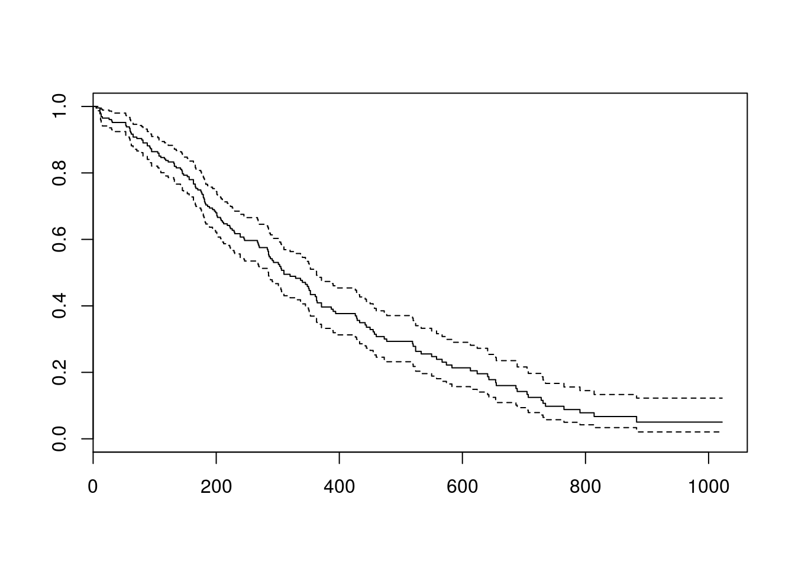
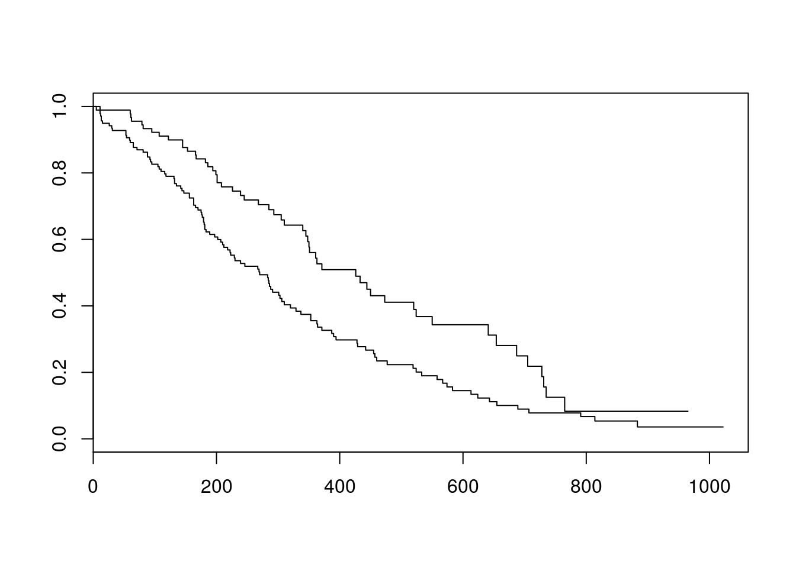
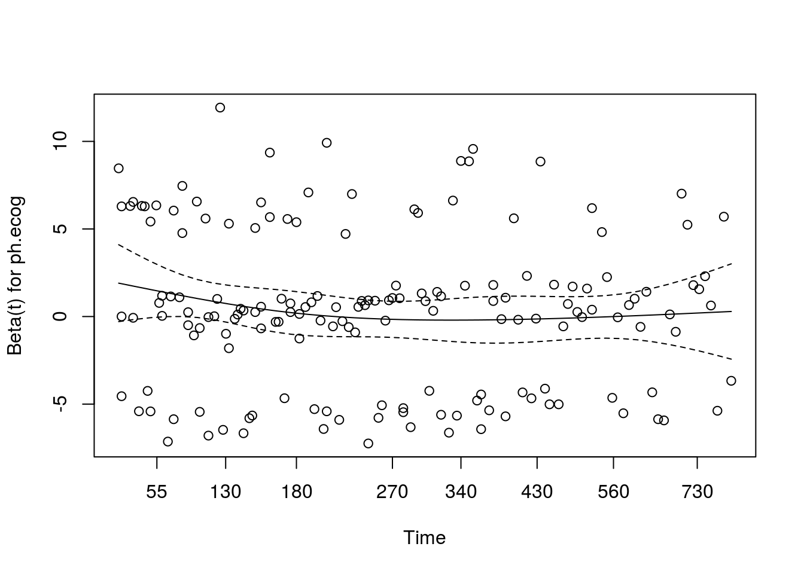
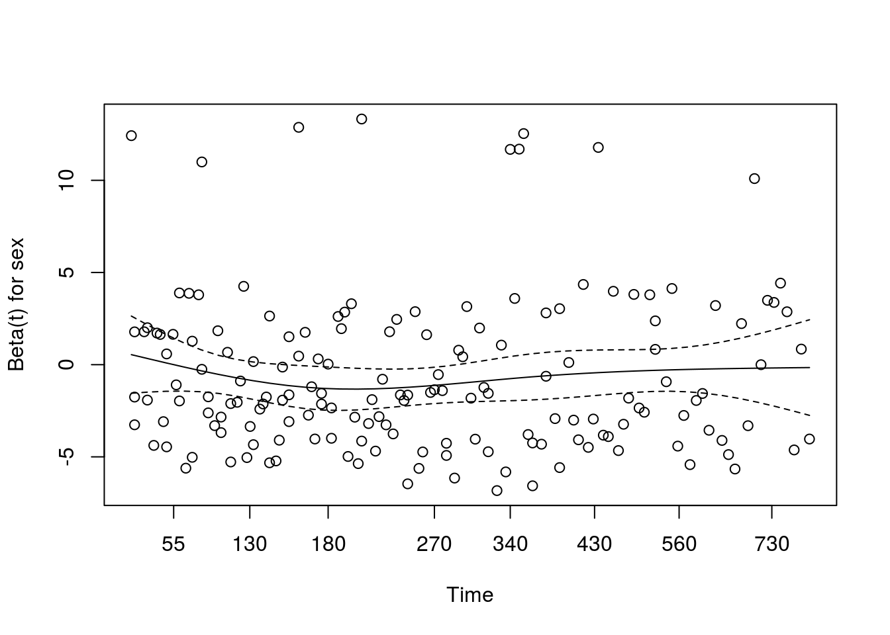
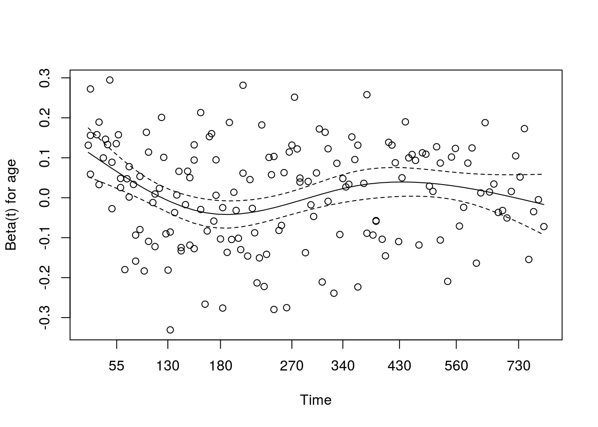
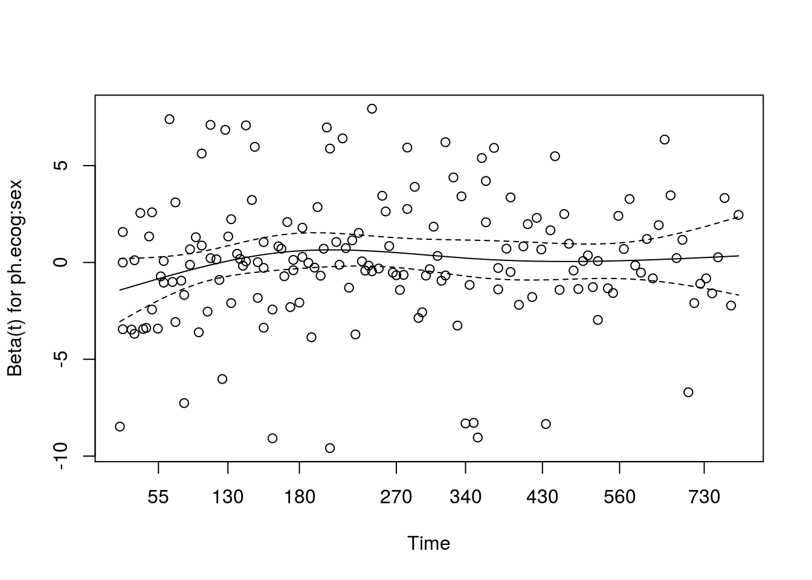

Dans cette section on s’interessera a comment specifier des models de survie simple (kaplan-meier et cox).
On ne cherchera pas a definir s’il est judicieux d’utiliser ce genre de model, ni les differences possibles entre ajustement/interaction/stratification dans le cadre de modeles a risques proportionels.
On utilisera le jeu de donnees ‘lung’ du package survival. Cette BDD comprend le suivi de 228 personnes atteintes d’un cancer pulmonaire avance. Plus de details peuvent etre trouves ici.
library(survival)##
## Attaching package: 'survival'## The following object is masked from 'package:DAAG':
##
## lungdata(lung)
str(lung)## 'data.frame': 228 obs. of 10 variables:
## $ inst : num 3 3 3 5 1 12 7 11 1 7 ...
## $ time : num 306 455 1010 210 883 ...
## $ status : num 2 2 1 2 2 1 2 2 2 2 ...
## $ age : num 74 68 56 57 60 74 68 71 53 61 ...
## $ sex : num 1 1 1 1 1 1 2 2 1 1 ...
## $ ph.ecog : num 1 0 0 1 0 1 2 2 1 2 ...
## $ ph.karno : num 90 90 90 90 100 50 70 60 70 70 ...
## $ pat.karno: num 100 90 90 60 90 80 60 80 80 70 ...
## $ meal.cal : num 1175 1225 NA 1150 NA ...
## $ wt.loss : num NA 15 15 11 0 0 10 1 16 34 ...1. Objet survie
Les models de suvie utilisent des donnees censurees. C’est a dire l’association entre une duree et un statut.
La premiere etape est donc de prendre en compte ce type de donnees, qui seront utilisees dans l’ensemble des models par la suite.
Obj.surv <- Surv(lung$time, #duree de survie
lung$status) #statut a cette date2. Kaplan Meier
Un premier model possible est le Kaplan-meier.
Cest un model non parametrique qui permet de comparer les durees de survie selon plusieurs strates.
#KM sans aucune strate
KM <- survfit(Obj.surv ~ 1)
KM## Call: survfit(formula = Obj.surv ~ 1)
##
## n events median 0.95LCL 0.95UCL
## 228 165 310 285 363plot(KM)
#KM en stratifiant sur le sexe
KM <- survfit(Obj.surv ~ lung$sex)
plot(KM)
#Test du log-rank
survdiff(Obj.surv ~ lung$sex)## Call:
## survdiff(formula = Obj.surv ~ lung$sex)
##
## N Observed Expected (O-E)^2/E (O-E)^2/V
## lung$sex=1 138 112 91.6 4.55 10.3
## lung$sex=2 90 53 73.4 5.68 10.3
##
## Chisq= 10.3 on 1 degrees of freedom, p= 0.001313. Model de Cox
Le model de Cox est un model semi parametrique a risque proportionel.
Il contourne l’evaluation du risque de base en faisant l’hypothese que les risques sont proportionnels tout au long du suivi.
Cx.M1 <- coxph(Obj.surv ~ ph.ecog*sex + age, data=lung)
summary(Cx.M1)## Call:
## coxph(formula = Obj.surv ~ ph.ecog * sex + age, data = lung)
##
## n= 227, number of events= 164
## (1 observation deleted due to missingness)
##
## coef exp(coef) se(coef) z Pr(>|z|)
## ph.ecog 0.334852 1.397734 0.340361 0.984 0.3252
## sex -0.663143 0.515229 0.324380 -2.044 0.0409 *
## age 0.010212 1.010264 0.009495 1.076 0.2821
## ph.ecog:sex 0.101415 1.106736 0.252649 0.401 0.6881
## ---
## Signif. codes: 0 '***' 0.001 '**' 0.01 '*' 0.05 '.' 0.1 ' ' 1
##
## exp(coef) exp(-coef) lower .95 upper .95
## ph.ecog 1.3977 0.7154 0.7173 2.724
## sex 0.5152 1.9409 0.2728 0.973
## age 1.0103 0.9898 0.9916 1.029
## ph.ecog:sex 1.1067 0.9036 0.6745 1.816
##
## Concordance= 0.637 (se = 0.026 )
## Rsquare= 0.126 (max possible= 0.999 )
## Likelihood ratio test= 30.66 on 4 df, p=3.588e-06
## Wald test = 29.21 on 4 df, p=7.071e-06
## Score (logrank) test = 31.01 on 4 df, p=3.052e-06#Comparaison de models
Cx.M2<- coxph(Obj.surv ~ ph.ecog + age, data=lung)
anova(Cx.M1, Cx.M2)## Analysis of Deviance Table
## Cox model: response is Obj.surv
## Model 1: ~ ph.ecog * sex + age
## Model 2: ~ ph.ecog + age
## loglik Chisq Df P(>|Chi|)
## 1 -729.15
## 2 -734.95 11.607 2 0.003018 **
## ---
## Signif. codes: 0 '***' 0.001 '**' 0.01 '*' 0.05 '.' 0.1 ' ' 1Dans le cadre du model de Cox plusieurs elements sont a verifier, dont l’hypothese des risques proportionnels.
Pour valider cette hypothese on espere que les coefficients soient invariant au cours du temps. Pour cela on peut analyser les residus, dont les residus de Schoenfeld.
Verif <- cox.zph(Cx.M1)
Verif## rho chisq p
## ph.ecog -0.0985 1.643 0.200
## sex 0.0109 0.020 0.888
## age -0.0271 0.134 0.714
## ph.ecog:sex 0.0629 0.698 0.404
## GLOBAL NA 5.444 0.245plot(Verif)